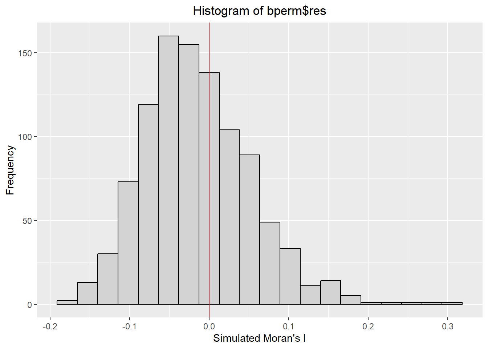

In-class Exercise 7.1: Global Measures of Spatial Autocorrelation
1 Overview
- import geospatial data using appropriate function(s) of sf package,
- import csv file using appropriate function of readr package, - perform relational join using appropriate join function of dplyr package,
- compute Global Spatial Autocorrelation (GSA) statistics by using appropriate functions of spdep package,
- plot Moran scatterplot,
- compute and plot spatial correlogram using appropriate function of spdep package.
- compute Local Indicator of Spatial Association (LISA) statistics for detecting clusters and outliers by using appropriate functions spdep package;
- compute Getis-Ord’s Gi-statistics for detecting hot spot or/and cold spot area by using appropriate functions of spdep package; and
- to visualise the analysis output by using tmap package.
2 Starting
2.1 The Analytical Question
In spatial policy, one of the main development objective of the local government and planners is to ensure equal distribution of development in the province.
Task: To apply appropriate spatial statistical methods to discover if development are even distributed geographically.
If YES, our next question will be “where are these clusters?”.
If NO, our next question will be “is there sign of spatial clustering?”.
In this case study, we will be examining the spatial pattern of the GDP per capita of Hunan Provice, People Republic of China.
2.1.1 The Study Area and Data
- Hunan province administrative boundary layer at county level - Geospatial data set in ESRI shapefile format.
- Hunan_2012.csv - This csv file contains selected Hunan’s local development indicators in 2012.
2.2 Setting Analytical Tools
- sf is use for importing and handling geospatial data,
- tidyverse is mainly use for wrangling attribute data,
- spdep will mainly used to compute spatial weights, global and local spatial autocorrelation statistics, and
- tmap will be used to prepare cartographic quality chropleth map.
3 Getting the Data Into R Environment
3.1 Importing
3.1.1 Importing Shapefile
The code chunk below uses st_read() of sf package to import Hunan shapefile into R. The imported shapefile will be of simple features Object.
Reading layer `Hunan' from data source
`C:\deadline2359\IS415-GAA\Hands-on_Ex\Hands-on_Ex07.1\data\geospatial'
using driver `ESRI Shapefile'
Simple feature collection with 88 features and 7 fields
Geometry type: POLYGON
Dimension: XY
Bounding box: xmin: 108.7831 ymin: 24.6342 xmax: 114.2544 ymax: 30.12812
Geodetic CRS: WGS 84Simple feature collection with 5 features and 7 fields
Geometry type: POLYGON
Dimension: XY
Bounding box: xmin: 111.2145 ymin: 28.61762 xmax: 112.3013 ymax: 29.95847
Geodetic CRS: WGS 84
NAME_2 ID_3 NAME_3 ENGTYPE_3 Shape_Leng Shape_Area County
1 Changde 21098 Anxiang County 1.869074 0.10056190 Anxiang
2 Changde 21100 Hanshou County 2.360691 0.19978745 Hanshou
3 Changde 21101 Jinshi County City 1.425620 0.05302413 Jinshi
4 Changde 21102 Li County 3.474325 0.18908121 Li
5 Changde 21103 Linli County 2.289506 0.11450357 Linli
geometry
1 POLYGON ((112.0625 29.75523...
2 POLYGON ((112.2288 29.11684...
3 POLYGON ((111.8927 29.6013,...
4 POLYGON ((111.3731 29.94649...
5 POLYGON ((111.6324 29.76288...3.1.2 Import csv file into r environment
Next, we will import Hunan_2012.csv into R by using read_csv() of readr package. The output is R dataframe class.
# A tibble: 5 × 29
County City avg_w…¹ depos…² FAI Gov_Rev Gov_Exp GDP GDPPC GIO Loan
<chr> <chr> <dbl> <dbl> <dbl> <dbl> <dbl> <dbl> <dbl> <dbl> <dbl>
1 Anhua Yiyang 30544 10967 6832. 457. 2703 13225 14567 9277. 3955.
2 Anren Chenzh… 28058 4599. 6386. 221. 1455. 4941. 12761 4189. 2555.
3 Anxiang Changde 31935 5517. 3541 244. 1780. 12482 23667 5109. 2807.
4 Baojing Hunan … 30843 2250 1005. 193. 1379. 4088. 14563 3624. 1254.
5 Chaling Zhuzhou 31251 8241. 6508. 620. 1947 11585 20078 9158. 4287.
# … with 18 more variables: NIPCR <dbl>, Bed <dbl>, Emp <dbl>, EmpR <dbl>,
# EmpRT <dbl>, Pri_Stu <dbl>, Sec_Stu <dbl>, Household <dbl>,
# Household_R <dbl>, NOIP <dbl>, Pop_R <dbl>, RSCG <dbl>, Pop_T <dbl>,
# Agri <dbl>, Service <dbl>, Disp_Inc <dbl>, RORP <dbl>, ROREmp <dbl>, and
# abbreviated variable names ¹avg_wage, ²deposite3.2 Performing Relational Join
The code chunk below will be used to update the attribute table of hunan’s SpatialPolygonsDataFrame with the attribute fields of hunan2012 dataframe. This is performed by using left_join() of dplyr package.
Simple feature collection with 5 features and 6 fields
Geometry type: POLYGON
Dimension: XY
Bounding box: xmin: 111.2145 ymin: 28.61762 xmax: 112.3013 ymax: 29.95847
Geodetic CRS: WGS 84
NAME_2 ID_3 NAME_3 ENGTYPE_3 County GDPPC
1 Changde 21098 Anxiang County Anxiang 23667
2 Changde 21100 Hanshou County Hanshou 20981
3 Changde 21101 Jinshi County City Jinshi 34592
4 Changde 21102 Li County Li 24473
5 Changde 21103 Linli County Linli 25554
geometry
1 POLYGON ((112.0625 29.75523...
2 POLYGON ((112.2288 29.11684...
3 POLYGON ((111.8927 29.6013,...
4 POLYGON ((111.3731 29.94649...
5 POLYGON ((111.6324 29.76288...3.3 Visualising Regional Development Indicator
Now, a basemap and a choropleth map will be prepared to show the distribution of GDPPC 2012 by using qtm() of tmap package.
# data classification: equal
equal <- tm_shape(hunan) +
tm_fill("GDPPC",
n = 5,
style = "equal") +
tm_borders(alpha = 0.5) +
tm_layout(main.title = "Equal interval classification")
# data classification: quantile
quantile <- tm_shape(hunan) +
tm_fill("GDPPC",
n = 5,
style = "quantile") +
tm_borders(alpha = 0.5) +
tm_layout(main.title = "Equal quantile classification")
tmap_arrange(equal,
quantile,
asp=1,
ncol=2)
4 Global Spatial Autocorrelation
In this section, we will compute global spatial autocorrelation statistics and perform spatial complete randomness test for global spatial autocorrelation.
4.1 Computing Contiguity Spatial Weights
Before computing the global spatial autocorrelation statistics, spatial weights of the study area need to be constructed. The spatial weights is used to define the neighbourhood relationships between the geographical units (i.e., county) in the study area.
In the code chunk below, poly2nb() of spdep package is used to compute contiguity weight matrices for the study area. This function builds a neighbours list based on regions with contiguous boundaries.
- The “queen” argument takes a boolean (default: TRUE). If specified to be TRUE, the function will return a list of first order neighbours using the Queen criteria.
More specifically, the code chunk below is used to compute Queen contiguity weight matrix.
Neighbour list object:
Number of regions: 88
Number of nonzero links: 448
Percentage nonzero weights: 5.785124
Average number of links: 5.090909
Link number distribution:
1 2 3 4 5 6 7 8 9 11
2 2 12 16 24 14 11 4 2 1
2 least connected regions:
30 65 with 1 link
1 most connected region:
85 with 11 linksThe summary report above shows that there are 88 area units in Hunan. The most connected area unit has 11 neighbours. There are two area units with only one neighbour.
4.2 Row-standardised Weights Matrix
Next, weights will be assigned to each neighboring polygon.
In our case, each neighbouring polygon will be assigned equal weight (style=“W”). This is accomplished by
- assigning \(\frac{1}{Number Of Neighbours}\) to each neighboring county then,
- summing the weighted income values.
While this is the most intuitive way to summarise the neighbors’ values, it has one drawback in that the polygons along the edges of the study area will base their lagged values on fewer polygons, thus potentially over- or under-estimating the true nature of the spatial autocorrelation in the data.
For this example, we’ll stick with the style=“W” option for simplicity’s sake but note that other more robust options are available, notably style=“B”.
Characteristics of weights list object:
Neighbour list object:
Number of regions: 88
Number of nonzero links: 448
Percentage nonzero weights: 5.785124
Average number of links: 5.090909
Weights style: W
Weights constants summary:
n nn S0 S1 S2
W 88 7744 88 37.86334 365.9147The input of nb2listw() must be an object of class nb. The syntax of the function has two major arguments, namely style and zero.poly.
- style can take values “W”, “B”, “C”, “U”, “S” and “minmax”.
- B is the basic binary coding,
- W is row standardised (sums over all links to n),
- C is globally standardised (sums over all links to n),
- U is equal to C divided by the number of neighbours (sums over all links to unity), while
- S is the variance-stabilizing coding scheme proposed (sums over all links to n).
- minmax divides the weights by the minimum of the maximum row sums and maximum column sums of the input weights. It is similar to the C and U styles.
- If zero policy is set to TRUE, weights vectors of zero length are inserted for regions without neighbour in the neighbours list. These will in turn generate lag values of zero, equivalent to the sum of products of the zero row t(rep(0, length=length(neighbours))) %*% x, for arbitrary numerical vector x of length length(neighbours). The spatially lagged value of x for the zero-neighbour region will then be zero, which may (or may not) be a sensible choice.
- If FALSE, stop with error for any empty neighbour sets
4.3 Global Spatial Autocorrelation: Moran’s I
4.3.1 Maron’s I test
The code chunk below performs Moran’s I statistical testing using moran.test() of spdep.
Moran I test under randomisation
data: hunan$GDPPC
weights: rswm_q
Moran I statistic standard deviate = 4.7351, p-value = 1.095e-06
alternative hypothesis: greater
sample estimates:
Moran I statistic Expectation Variance
0.300749970 -0.011494253 0.004348351 Result
- statistic - the value of the standard deviate of Moran’s I.
- p.value - the p-value of the test.
- estimate - the value of the observed Moran’s I, its expectation and variance under the method assumption.
- alternative - a character string describing the alternative hypothesis.
- method - a character string giving the assumption used for calculating the standard deviate.
- data.name - a character string giving the name(s) of the data.
The p-value is really small. Hence, the null hypothesis is rejected, which means development is not distributed equally across the region.
4.3.2 Computing Monte Carlo Moran’s I
The code chunk below performs permutation test for Moran’s I statistic by using moran.mc() of spdep. A total of 1000 simulation will be performed.
set.seed(1234)
bperm = moran.mc(hunan$GDPPC,
listw=rswm_q,
nsim=999,
zero.policy = TRUE,
na.action=na.omit)
bperm
Monte-Carlo simulation of Moran I
data: hunan$GDPPC
weights: rswm_q
number of simulations + 1: 1000
statistic = 0.30075, observed rank = 1000, p-value = 0.001
alternative hypothesis: greaterParameters
- listw - listw objected created by
nb2listw(). - nsim - number of permutations.
- zero.policy - if TRUE, assign zero to the lagged value of zones without neighbours; if FALSE, assign NA
- alternative - a character string describing the alternative hypothesis, must be either “greater” (default), “two.sided”, or “less”.
- na.action - default
na.fail, can also bena.omitorna.exclude. In these cases, the weights list will be subsetted to remove NAs in the data.- It may be necessary to set zero.policy to TRUE because this subsetting may create no-neighbour observations.
The p-value is very small. Hence, the null hypothesis is rejected, which means development is not distributed equally across the region.
4.3.3 Visualising Monte Carlo Moran’s I
It is always a good practice to examine the simulated Moran’s I test statistics in greater detail. This can be achieved by plotting the distribution of the statistical values as a histogram by using the code chunk below.
In the code chunk below hist() and abline() of R Graphics are used.
Min. 1st Qu. Median Mean 3rd Qu. Max.
-0.18339 -0.06168 -0.02125 -0.01505 0.02611 0.27593 ::: {.panel-tabset} #### Using hist

4.3.3.1 Using ggplot
ggplot(data.frame(bperm$res), aes(x=bperm.res)) +
geom_histogram(bins = 20, fill = "lightgrey", colour = "black") +
geom_vline(aes(xintercept=0),
color="red", size=0.25) +
xlab("Simulated Moran's I") +
ylab("Frequency") +
ggtitle("Histogram of bperm$res") +
theme(plot.title = element_text(hjust = 0.5))
The distribution is quite normalised but skews towards to the right.
4.3.4
4.4 Global Spatial Autocorrelation: Geary’s
In this section, Geary’s C statistics testing is performed by using appropriate functions of spdep package.
4.4.1 Geary’s C test
The code chunk below performs Geary’s C test for spatial autocorrelation by using geary.test() of spdep.
Geary C test under randomisation
data: hunan$GDPPC
weights: rswm_q
Geary C statistic standard deviate = 3.6108, p-value = 0.0001526
alternative hypothesis: Expectation greater than statistic
sample estimates:
Geary C statistic Expectation Variance
0.6907223 1.0000000 0.0073364 The p-value is really small. Hence, the null hypothesis is rejected, which means development is not distributed equally across the region.
4.4.2 Computing Monte Carlo Geary's C
The code chunk below performs permutation test for Geary's C statistic by using geary.mc() of spdep.
Monte-Carlo simulation of Geary C
data: hunan$GDPPC
weights: rswm_q
number of simulations + 1: 1000
statistic = 0.69072, observed rank = 1, p-value = 0.001
alternative hypothesis: greaterThe p-value is really small. Hence, the null hypothesis is rejected, which means development is not distributed equally across the region.
4.4.3 Visualising the Monte Carlo Geary's C
Next, a histogram will be plotted to reveal the distribution of the simulated values by using the code chunk below.
Min. 1st Qu. Median Mean 3rd Qu. Max.
0.7142 0.9502 1.0052 1.0044 1.0595 1.2722 
5 Spatial Correlogram
Spatial correlograms are great to examine patterns of spatial autocorrelation in your data or model residuals.
They show how correlated are pairs of spatial observations when you increase the distance (lag) between them - they are plots of some index of autocorrelation (Moran's I or Geary's c) against distance. Although correlograms are not as fundamental as variograms (a keystone concept of geostatistics), they are very useful as an exploratory and descriptive tool. For this purpose they actually provide richer information than variograms.
5.1 Compute Moran's I correlogram
In the code chunk below, sp.correlogram() of spdep package is used to compute a 6-lag spatial correlogram of GDPPC. The global spatial autocorrelation used in Moran's I. The plot() of base Graph is then used to plot the output.

Plotting the output might not provide a complete interpretation. This is because not all autocorrelation values are statistically significant. Hence, it is important to examine the full analysis report by printing out the analysis results as in the code chunk below.
Spatial correlogram for hunan$GDPPC
method: Moran's I
estimate expectation variance standard deviate Pr(I) two sided
1 (88) 0.3007500 -0.0114943 0.0043484 4.7351 2.189e-06 ***
2 (88) 0.2060084 -0.0114943 0.0020962 4.7505 2.029e-06 ***
3 (88) 0.0668273 -0.0114943 0.0014602 2.0496 0.040400 *
4 (88) 0.0299470 -0.0114943 0.0011717 1.2107 0.226015
5 (88) -0.1530471 -0.0114943 0.0012440 -4.0134 5.984e-05 ***
6 (88) -0.1187070 -0.0114943 0.0016791 -2.6164 0.008886 **
---
Signif. codes: 0 '***' 0.001 '**' 0.01 '*' 0.05 '.' 0.1 ' ' 15.1.1
5.2 Compute Geary's C correlogram and plot
In the code chunk below, sp.correlogram() of spdep package is used to compute a 6-lag spatial correlogram of GDPPC. The global spatial autocorrelation used in Geary's C. The plot() of base Graph is then used to plot the output.

Similar to the previous step, we will print out the analysis report by using the code chunk below.
Spatial correlogram for hunan$GDPPC
method: Geary's C
estimate expectation variance standard deviate Pr(I) two sided
1 (88) 0.6907223 1.0000000 0.0073364 -3.6108 0.0003052 ***
2 (88) 0.7630197 1.0000000 0.0049126 -3.3811 0.0007220 ***
3 (88) 0.9397299 1.0000000 0.0049005 -0.8610 0.3892612
4 (88) 1.0098462 1.0000000 0.0039631 0.1564 0.8757128
5 (88) 1.2008204 1.0000000 0.0035568 3.3673 0.0007592 ***
6 (88) 1.0773386 1.0000000 0.0058042 1.0151 0.3100407
---
Signif. codes: 0 '***' 0.001 '**' 0.01 '*' 0.05 '.' 0.1 ' ' 1